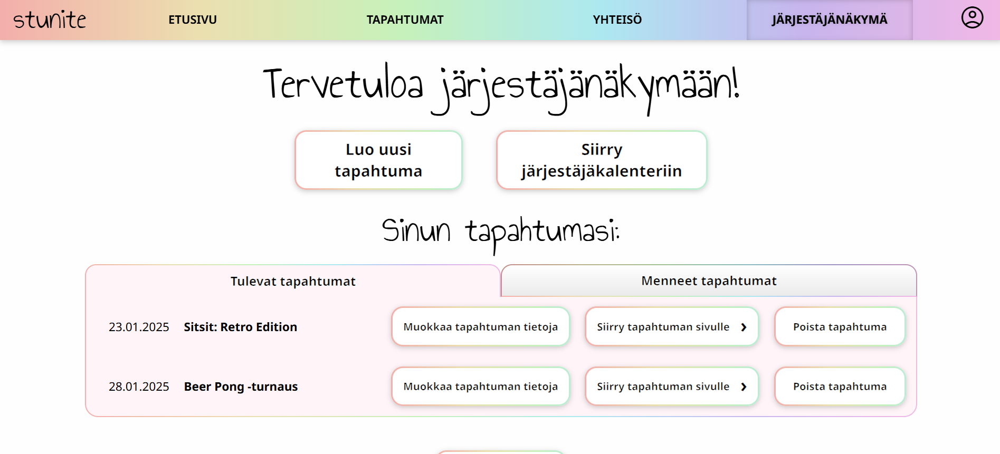
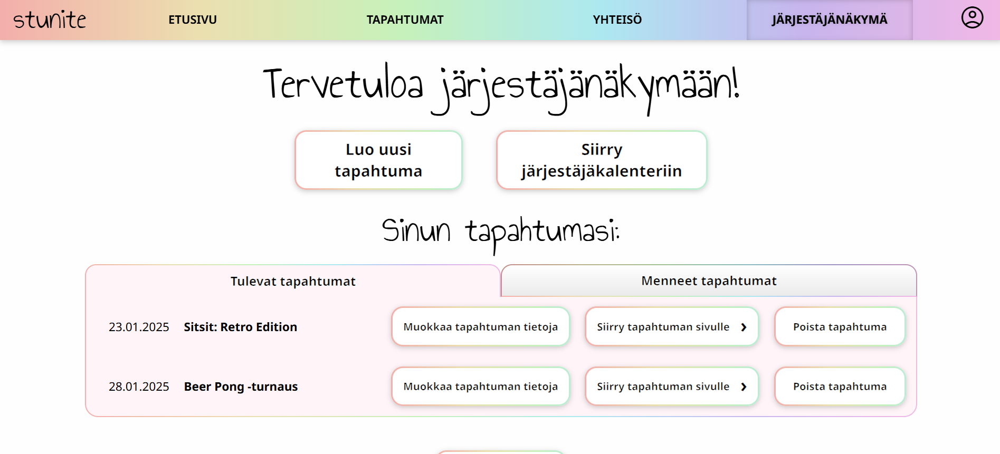

Projektin yleiskatsaus
STUNITE on viiden tietojenkäsittelyopiskelijan
Ticorporate-projekti syksyltä 2024. Sovellus on suunnattu
tapahtumakävijöille ja -järjestäjille, tavoitteena tuoda
opiskelijatapahtumat laajemmin esille ja edistää eri järjestöjen
välistä yhteistyötä.
Projektissa roolit jakautuivat Backend- ja Frontend-kehittäjään,
pilvipalveluosaajaan, UI/UX-suunnittelija & sisällöntuottajaan
sekä liiketoimintaan keskittyvään osaajaan.
Oma pääroolini oli Frontend-kehittäjä, ja
sivuroolissani toimin testaajana. Sovellus ei ole tällä hetkellä
tuotantokäytössä


 
